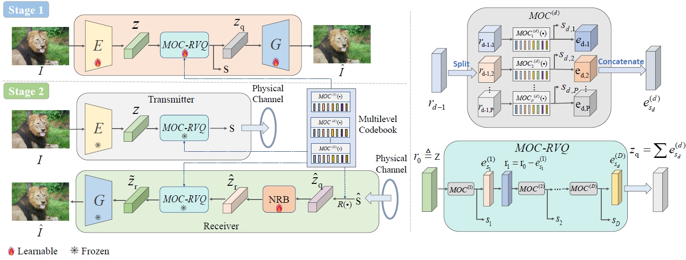

|
Yingbin Zhou 周英斌
I am currently a Ph.D student (from Sep. 2022) at the Future Network of Intelligence Institute (FNii)
and the School of Science and Engineering (SSE) at The Chinese University of Hong Kong, Shenzhen (CUHK-Shenzhen),
under the supervision of Prof. Shuguang Cui, and the co-supervision of Prof. Yaping Sun.
Prior to this, I received my M.S. and B.Eng. degrees from Sun Yat-sen University (SYSU) and Shantou University (STU) in 2022 and 2019, respectively.
My research is primarily centered around the utilization of Generative AI in Semantic Communication, Intelligent Networks and etc.
Email /
Github /
Google Scholar /
CSDN
|

|
- 2024-09: MOC-RVQ is accepted by GLOBECOM 2024!
- Sep. 2019 - Jul. 2022 M.S. at SYSU
- Sep. 2015 - Jul. 2019 Undergraduate at STU

[GLOBECOM'24] MOC-RVQ: Multilevel Codebook-Assisted Digital Generative Semantic Communication
|
Publications
[Selected]
[All]
(# corresponding author, * equal contribution)
|
- Second Prize Postgraduate group of C / C + + programming in Guangdong division of the 12th Blue Bridge Cup national
software and information technology professionals competition
- Bronze Medal 2020-2021 second national college students' algorithm design and programming challenge (spring)
- Coding Python, C++, basic data structures and algorithms, having ability to implement ideas quickly
- Language IELTS (Overall 6.5 - Listening 6.5, Reading 7.0, Writing 6.0, Speaking 5.5)
|